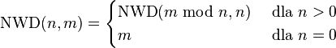

Wskazówka
Przypomnijmy sobie dwie równości, które pojawiły się w końcówce treści zadania:
NWD(n, m) = NWD(r, n)
(liczba r oznacza resztę dzielenia m prze n) oraz
NWD(0, n) = n.
Zauważ, że te dwie równości mają charakter rekurencjny
i na ich podstawie można wyciągnąć następującą definicję:

W powyższej równości mod oznacza resztę z dzielenia.
W języku C++, a także w naszym języku resztę
z dzielenia możemy obliczyć pomocą operatora %.
Zastanówmy się jeszcze przez chwilę czy program napisany według powyższej definicji,
zawsze się zatrzyma. Zauważmy, że w kolejnych wywołaniach funkcji NWD,
pierwszy argument maleje (m mod n < n).
Zatem skoro w obliczeniach występują tylko liczby naturalne,
to w końcu pierwszy argument osiągnie wartość zero.
Pseudokod funkcji rekurencyjnej
| Dane: |
Liczby naturalne n oraz m.
|
| Wynik: |
Największy wspólny dzielnik n oraz m.
|
| Krok 1. |
Jeśli n = 0, to zwróć m i zakończ funkcję.
|
| Krok 2. |
W przeciwnym wypadku wywołaj funkcję rekurencyjnie
dla m mod n oraz n,
zwróć obliczoną wartość i zakończ działanie funkcji
|
Pseudokod funkcji iteracyjnej
| Dane: |
Liczby naturalne n oraz m.
|
| Wynik: |
Największy wspólny dzielnik n oraz m.
|
| Krok 1. |
Dopóki n ≠ 0 wykonuj:
przypisz t := (m mod n)
przypisz m := n
przypisz n := t
|
| Krok 2. |
Zwróć wartość zmiennej m i zakończ funkcję.
|